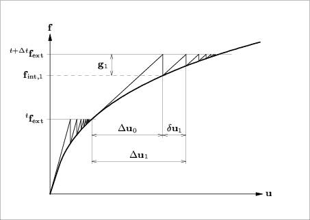

The modified
Newton-Raphson method only evaluates the stiffness relation at the start of the
increment. This means that the prediction is always based on a converged
equilibrium state. Usually, Modified Newton-Raphson converges slower to
equilibrium than Regular Newton-Raphson. However, for every iteration only the
prediction of the incremental displacements and the internal force vector have
to be calculated, it is not necessary to set up a new stiffness matrix. GEOMEC always uses a direct solver for the linear set of equations, and therefore it is
not necessary to perform the decomposition again, only the relatively fast
substitution part is required.